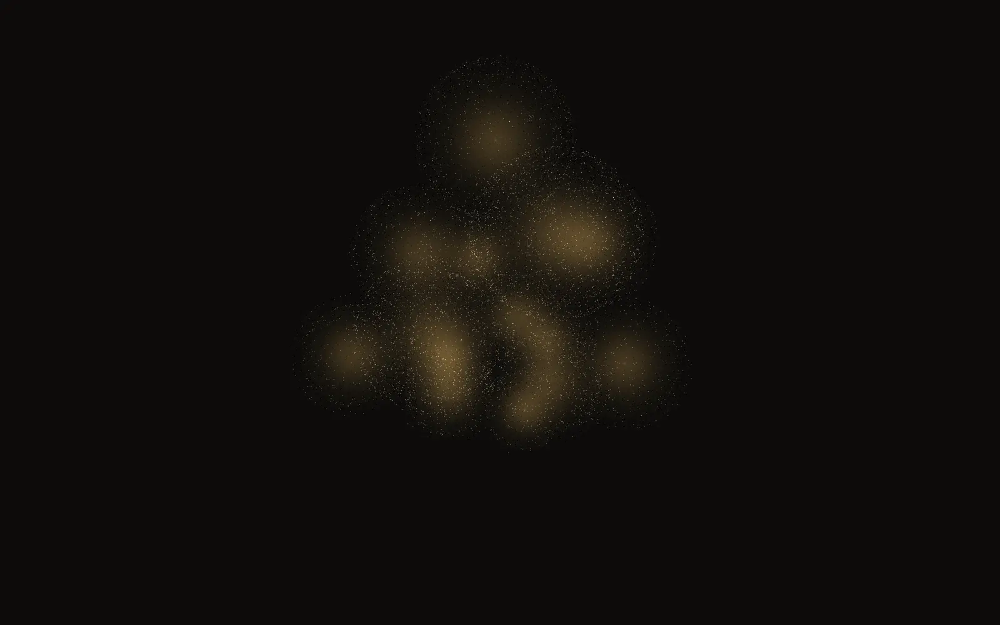

Amortização
Partindo de base vazia, o número de buscas é exatamente o número de tarefas distintas; se elas crescem mais devagar que as tarefas, o custo por tarefa tende ao custo de verificar.
Conhecimento.lean
Há um espaço com 117.649 pontos.
Cada ponto é uma palavra de seis letras, num alfabeto de sete.
Quantas esferas de raio 4 bastam para tocar todas?
A literatura dizia: entre treze e quinze.
Catorze bastam. Com treze, não há como.
Qualquer um pode conferir as 117.649, uma a uma.
Colapso de estado · reversão de entropia local
O que este repositório éA machine-checked ledger of covering-code upper bounds, with formally certified exact entries.
Visualização de um código real: as 14 palavras de data/codes/q7_n6_R4_M14.txt e as 117.649 de ℤ76, cada uma levada à esfera de um centro a distância ≤ 4, em camadas pela distância. K7(6,4) = 14 é potencialmente novo: não encontrado na literatura que pesquisamos. A cota superior foi reproduzida de forma independente; a inferior é um certificado conferido por verificador, fora do Lean.
§ Entenda o problema
A mesma pergunta, em quatro profundidades. Escolha a sua.
Quantas antenas, no mínimo, garantem que toda casa fique a no máximo R quarteirões de uma delas? Kq(n,R) é esse número mínimo, só que as “casas” são palavras e a distância é contar letras diferentes.
AnalogiaAntenas de celular: cada uma cobre uma vizinhança; queremos cobrir a cidade inteira gastando o mínimo.
ExemploCom palavras de 3 bits e alcance 1, duas antenas bastam: 000 e 111. Teste no cubo ao lado.
Uma palavra tem n posições, cada uma com um de q símbolos: são qn palavras. A distância de Hamming entre duas palavras é o número de posições em que diferem. A esfera de raio R em torno de uma palavra junta todas as palavras a distância ≤ R. Um código de cobertura é um conjunto de palavras cujas esferas, juntas, contêm todas as qn.
AnalogiaCada esfera tem o mesmo tamanho V. Se o espaço tem qn lugares, nunca bastam menos que qn/V esferas: é a “cota da esfera”.
Exemploq = 2, n = 3, R = 1: cada esfera tem 1 + 3 = 4 palavras e o espaço tem 8. Logo são precisas pelo menos 8/4 = 2, e {000, 111} mostra que 2 bastam: K2(3,1) = 2.
Kq(n,R) é o número de dominação a distância R do grafo de Hamming H(n,q). Uma cota superior M se prova exibindo um código com M palavras — conferir é polinomial. Uma cota inferior exige mostrar que nenhum código com M − 1 palavras existe: contagem, programação linear ou busca exaustiva com quebra de simetria.
AnalogiaAchar um código é como achar a agulha; provar que não há agulha menor é revirar o palheiro inteiro — e deixar um recibo que outro possa conferir.
ExemploK2(4,1) = 4: a esfera tem 5 palavras, ⌈16/5⌉ = 4, e {0000, 0001, 1110, 1111} cobre o hipercubo Q4.
As tabelas de Kéri (atualizadas até 2011) registram as melhores cotas conhecidas para q, n e R pequenos. As inferiores vêm de contagem refinada, programação linear e semidefinida, matrizes de partição e buscas exaustivas; as superiores, de construções (soma direta, métodos matriciais) e de busca local. Aqui, cada cota carrega a procedência e um estado: código explícito conferido, certificado de inexistência verificado, ou teorema do kernel do Lean.
AnalogiaO ledger é um livro-caixa: cada número tem lançamento, origem e auditor. O auditor mais exigente é o kernel do Lean.
ExemploK3(6,2): o intervalo da literatura era 15–17; certificados de que não existem códigos com 15 e com 16 palavras, conferidos por verificador, fecham a célula em 17.
A cota da esfera: nenhum código cobre com menos palavras que
Para K7(6,4): 117.649 ÷ 24.337 ≈ 4,8, logo pelo menos 5. A verdade é 14: a distância entre esse piso e o valor real é onde mora o trabalho.
I. Manifesto
Entropia local é a incerteza de um trabalho que ainda depende de alguém lembrar. Reverter isso custa energia: alguém gasta computação cara e descobre alguma coisa. O ponto não é evitar o custo, é fazer com que ele produza um objeto que barateia a próxima vez.
Em códigos de cobertura isso tem forma exata. Achar um código pequeno que cobre todo o espaço é busca; conferir que ele cobre é contar. Provar que nenhum código menor existe é busca maior ainda; conferir o certificado é rodar um verificador, ou o kernel do Lean.
Este repositório guarda cada cota com a sua procedência e o seu estado. Nada sobe de estado por opinião: sobe porque um verificador independente, ou uma prova formal, passou.
II. Princípios
Frase sem número é hipótese. A conclusão nunca sai mais larga que a evidência.
Ausência de erro não prova nada. Prova-se pelo estado depois: o certificado conferido, o teorema compilado.
Todo número tem fonte, versão e estado. Cota sem origem não entra no ledger.
Literatura é ponto de partida; a cota sobe de estado quando é reproduzida aqui.
Regra que mora na cabeça de alguém é entropia; regra que mora num teste, não é.
O que ainda não foi conferido é dito em voz alta, com o nome do estado.
III. Cotas de Kéri
Kq(n,R) = o menor código em ℤqn cujas esferas de Hamming de raio R cobrem tudo.
As tabelas de Gerzson Kéri reúnem, para cada alfabeto q, comprimento n e raio R, a melhor cota inferior e superior conhecidas. Cada célula com intervalo aberto é uma pergunta: existe um código menor, ou dá para provar que não existe?
É o terreno ideal para o método: encontrar um código é caro, conferir que ele cobre é barato e exato. Fechar uma célula é transformar uma faixa de incerteza num número — e deixar a prova onde qualquer um pode conferir.
“Potencialmente novo”: não encontrado na literatura que pesquisamos (docs/exatos/NOVIDADE_V09.md). Em K7(5,3), a cota superior 17 ganhou código próprio de 17 palavras e teorema Lean; a inferior é certificado verificado fora do Lean.
IV. Números ao vivo
A machine-checked ledger of covering-code upper bounds, with formally certified exact entries. A tabela inteira não foi verificada formalmente: cada cota tem o seu estado, e a maioria das cotas inferiores ainda é herdada da literatura.
Cotas inferiores: 1140 CLAIMED, 3 CERTIFICATE_VERIFIED, 2 FORMALIZED.
Números embutidos na página (ledger/COBERTURA.md, v0.9.1).
V. O teorema do James
Os três pilares da filosofia do James — conhecimento, segurança e alma — provados em Lean 4, sem Mathlib e sem sorry. Escrever as provas foi busca; conferi-las é o kernel, em milissegundos.
Partindo de base vazia, o número de buscas é exatamente o número de tarefas distintas; se elas crescem mais devagar que as tarefas, o custo por tarefa tende ao custo de verificar.
Conhecimento.leanPara qualquer log de eventos, inclusive adversário, nenhuma ação crítica aparece executada sem aprovação registrada.
Seguranca.leanO estado é função do log, não do host: um corpo pode morrer em qualquer evento e outro retoma do snapshot.
Alma.leanFronteira. Os teoremas valem para os modelos definidos lá, não para o código de produção: se o sistema se comporta como o modelo, então as propriedades valem.
VI. Horizonte
Em 2000, o Clay Mathematics Institute escolheu sete problemas e ofereceu US$ 1 milhão por cada solução. Um foi resolvido; seis seguem abertos.
Todo problema cuja solução se verifica depressa também se resolve depressa?
AbertoTodos os zeros não triviais da função zeta de Riemann têm parte real 1/2.
AbertoExiste uma teoria quântica de Yang–Mills em ℝ4 com lacuna de massa positiva?
AbertoAs equações em três dimensões têm sempre soluções suaves e globais a partir de dados iniciais suaves?
AbertoEm variedades algébricas projetivas, as classes de Hodge são combinações racionais de classes de subvariedades algébricas.
AbertoO posto de uma curva elíptica sobre os racionais é a ordem do zero da sua função L em s = 1.
AbertoToda 3-variedade fechada e simplesmente conexa é homeomorfa à 3-esfera. Provada por Grigori Perelman (2002–2003); ele recusou o prêmio do Clay, concedido em 2010.
ResolvidoNão resolvemos nem atacamos nenhum destes problemas. Eles aparecem aqui como horizonte e inspiração do método: perguntas em que descobrir e verificar parecem viver em escalas diferentes. Fonte do status: claymath.org.
VII. A escada
Cada cota começa como afirmação e só sobe um degrau quando um instrumento mais exigente confere. Os estados são cumulativos.
INDEPENDENTLY_REPRODUCEDNo Lean e reproduzida por um segundo caminho independente.
53cotasFORMALIZEDTeorema aceito pelo kernel do Lean 4.
435cotasCERTIFICATE_VERIFIEDCertificado conferido por verificador (estado típico de cota inferior).
0cotasWITNESS_CHECKEDCódigo explícito conferido por programa.
0cotasCLAIMEDAfirmada na literatura; nada conferido aqui.
657cotasVIII. Lacunas honestas
IX. Links e citação
@software{patzdorf_matematica,
author = {Patzdorf, Thiago},
title = {Covering codes checked by the Lean kernel},
year = {2026},
version = {0.9.1},
doi = {10.5281/zenodo.23085769},
url = {https://github.com/thiagopatzdorf/Matematica}
}